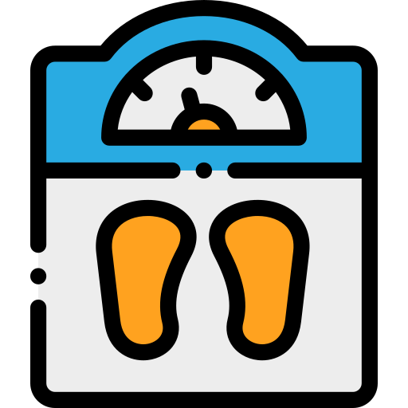
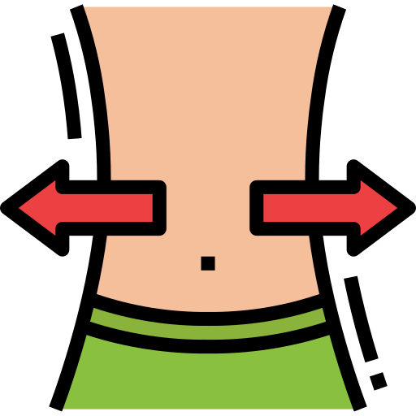
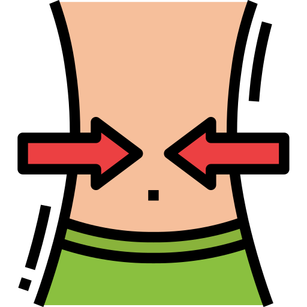

Hora:
Fecha:
En nuestra empresa contamos con grandes profesionales, los cuales tienen todo tipo de estudios en el ámbito de la medicina y nutricionismo.
Además, adaptamos la dieta a la persona, con lo que no nos importará que nos contactes.
NUESTROS EJERCICIOS SEGÚN LAS NECESIDADES DE CADA PERSONA
Menú:
| Mantener | Ganar Peso | Perder Peso | ||||||
|  |  |  | ||||||
| Calorias | Calorias | Calorias | ||||||
| Desayuno | Media Mañana | Comida | Merienda | Cena | |||||
| Calorias | Calorias en Base al ejercicio diario | Calorias | Calorias en Base al ejercicio diario | Calorias | Calorias en Base al ejercicio diario | Calorias | Calorias en Base al ejercicio diario | Calorias | Calorias en Base al ejercicio diario |